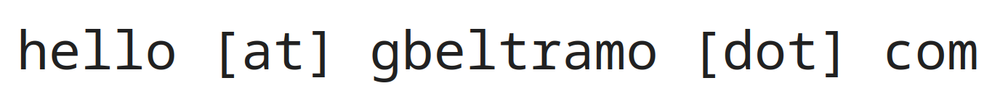

About
Hi, my name is Gabriele. I'm a software engineer with work experience in real-world machine learning applications and AI research.
My background is in mathematics at the intersection of geometry, computer science, and artificial intelligence.
Experience
-
AI Research Scientist, Giotto AI (Lausanne), March 2024 -
March 2026
Developed and trained large language models (LLMs) for the ARC-AGI 2024 and ARC-AGI 2025 challenges on Kaggle. -
Machine Learning Engineer, Immersive Fox (London), November 2023 -
February 2024
Developed, tested, and deployed AI image-to-video generation models. -
3d Perception Engineer, Cron AI (London), September 2021 - March 2023
Worked on developing, training, and evaluating deep learning models for real-time 3D object detection on LiDAR point clouds.
Education
-
PhD in Mathematics, Queen Mary University of
London, 2017-2021
Thesis: "Topology, Metrics and Data: Computational Methods and Applications" -
Master of Science in Mathematics, University of Turin, 2014-2016
Thesis: "Persistent Homology and Neural Data" -
Bachelor of Science in Mathematics, University of Turin, 2011-2014
Thesis: "The Seifer and Van Kampen Theorem"
Contacts
